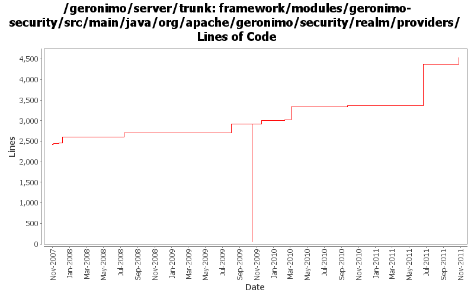

[root]/framework/modules/geronimo-security/src/main/java/org/apache/geronimo/security/realm/providers

| Author | Changes | Lines of Code | Lines per Change |
|---|---|---|---|
| Totals | 135 (100.0%) | 5110 (100.0%) | 37.8 |
| djencks | 34 (25.2%) | 3140 (61.4%) | 92.3 |
| xiaming | 10 (7.4%) | 1004 (19.6%) | 100.4 |
| xuhaihong | 7 (5.2%) | 333 (6.5%) | 47.5 |
| vamsic007 | 42 (31.1%) | 216 (4.2%) | 5.1 |
| kevan | 4 (3.0%) | 201 (3.9%) | 50.2 |
| rwonly | 9 (6.7%) | 153 (3.0%) | 17.0 |
| jdillon | 23 (17.0%) | 46 (0.9%) | 2.0 |
| gawor | 5 (3.7%) | 10 (0.2%) | 2.0 |
| dwoods | 1 (0.7%) | 7 (0.1%) | 7.0 |
add missed license headers
153 lines of code changed in 9 files:
GERONIMO-5651 Enable SPNEGO support, provided by ShengHao Fang
1 lines of code changed in 1 file:
GERONIMO-6058 Replace StringBuffer usage with StringBuilder
4 lines of code changed in 4 files:
GERONIMO-5652 generic auth module, patch provided by Fang ShengHao
1003 lines of code changed in 9 files:
GERONIMO-5619 make CertificatePropertiesFileLoginModule work with jetty
41 lines of code changed in 1 file:
deal with null password
0 lines of code changed in 2 files:
GERONIMO-5249 use Karaf's proxy login module to load login modules from correct bundles
2 lines of code changed in 1 file:
GERONIMO-434, GERONIMO-4360 runtime TransactionSupport support, which requires reversing the connection manager to mcf dependency. This allows extracting the connection factor from the jsr-77 connection factory object
19 lines of code changed in 1 file:
GERONIMO-5128 ogin module for spnego support in geronimo (Patch from Ashish Jain)
326 lines of code changed in 1 file:
GERONIMO-5132 In debug mode Properties file login module reurns loginsucceeded as true for non existent users and null password. Patch contributed by Ashish Jain.
7 lines of code changed in 1 file:
GERONIMO-4997 Can not connect to a ldap server in an anonymous way
2 lines of code changed in 1 file:
GERONIMO-4865 Add support for login using kerberos protocol. Patch from Ashish Jain
94 lines of code changed in 1 file:
GERONIMO-4916 step 2 move sandbox osgi framework into trunk
2857 lines of code changed in 14 files:
GERONIMO-4916 step 1 remove old framwork
0 lines of code changed in 14 files:
array of 1 is expected
2 lines of code changed in 1 file:
GERONIMO-4779 Implement a name-only login module that just adds principals for known users, does not check passwords. Useful for client-cert and e.g. openid authentication
212 lines of code changed in 1 file:
GERONIMO-4754 Unnecessary attributes retrieval causes slow login in LDAPLoginModule (Patch from Jack Cai)
1 lines of code changed in 1 file:
follow referrals in ldap login module (GERONIMO-4643)
7 lines of code changed in 1 file:
fix variable assignment. Patch from Shawn Jiang (GERONIMO-4441)
1 lines of code changed in 1 file:
GERONIMO-4258 move geronimo-j2ee into plugins/j2ee
2 lines of code changed in 1 file:
GERONIMO-4207 ConstantLoginModule that can add deploy time configurable user and group principals
101 lines of code changed in 1 file:
More loggers back to statics
13 lines of code changed in 11 files:
(GERONIMO-3985) Use SLF4J as the primary logging facade for Geronimo
33 lines of code changed in 12 files:
GERONIMO-1761 move geronimo-util to geronimo-crypto. Still pending mv of one test directory that svn wouldn't let me move
6 lines of code changed in 2 files:
GERONIMO-3744 shorten option name in NamedUsernamePasswordCredentialLoginModule preserving long name too
7 lines of code changed in 1 file:
GERONIMO-3654 Moving o.a.g.s.jaas.NamedUPCredentailLoginModule to o.a.g.s.realm.providers
o Copied o.a.g.s.jaas.NamedUPCredentailLoginModule to o.a.g.s.realm.providers.NamedUsernamePasswordCredentialLoginModule
o Marked NamedUPCredentialLoginModule as deprecated
o Changed all references from o.a.g.s.jaas.NamedUPCredentialLoginModule to o.a.g.s.realm.providers.NamedUsernamePasswordCredentialLoginModule
137 lines of code changed in 1 file:
GERONIMO-3658 Review RepeatedFailureLockoutLoginModule
o Changes to bring RepeatedFailureLockoutLoginModule in line with http://java.sun.com/j2se/1.5.0/docs/guide/security/jaas/JAASLMDevGuide.html
0 lines of code changed in 2 files:
GERONIMO-3657 Review FileAuditLoginModule
o Changes to bring FileAuditLoginModule in line with http://java.sun.com/j2se/1.5.0/docs/guide/security/jaas/JAASLMDevGuide.html
0 lines of code changed in 2 files:
o Make a copy of the password so that the password held in the Credential object is not changed.
o Fill the array with spaces before freeing the password.
5 lines of code changed in 1 file:
GERONIMO-3629 Review GeronimoPropertiesFileMappedPasswordCredentialLoginModule
o Missed this one in the last commit
1 lines of code changed in 1 file:
GERONIMO-3629 Review GeronimoPropertiesFileMappedPasswordCredentialLoginModule
o logout() should remove credentials from the subject.
o logout() should destroy credentials when the subject is read-only.
o Changes to bring GeronimoPropertiesFileMappedPasswordCredentialLoginModule in line with http://java.sun.com/j2se/1.5.0/docs/guide/security/jaas/JAASLMDevGuide.html
**: This commit can use a thorough review.
0 lines of code changed in 2 files:
GERONIMO-3628 Review GeronimoPasswordCredentialLoginModule
GERONIMO-3626 Review NamedUPCredentialLoginModule
o Missed the logging part in the previous commits :o(
18 lines of code changed in 1 file:
GERONIMO-3628 Review GeronimoPasswordCredentialLoginModule
o logout() should remove credentials from the subject.
o logout() should destroy credentials when the subject is read-only.
o Changes to bring GeronimoPasswordCredentialLoginModule in line with http://java.sun.com/j2se/1.5.0/docs/guide/security/jaas/JAASLMDevGuide.html
**: This commit can use a thorough review.
0 lines of code changed in 4 files:
Yes... clear() is the method I was looking for :o))
22 lines of code changed in 5 files:
Make supportedOptions an unmodifiableList to prevent accidental modification.
9 lines of code changed in 5 files:
GERONIMO-3584 LoginModules should not display warning messages for additional options added by JaasLoginModuleUse
o Suppressed warning messages for options added by JaasLoginModuleUse
17 lines of code changed in 5 files:
**GERONIMO-3582 Review CertificateChainLoginModule
o LoginModule should not add principals when login fails. Test is due.
o Other changes to bring CertificateChainLoginModule in line with http://java.sun.com/j2se/1.5.0/docs/guide/security/jaas/JAASLMDevGuide.html
**: This fix can use a thorough review.
0 lines of code changed in 2 files:
**GERONIMO-3575 Review CertificatePropertiesFileLoginModule
o LoginModule should not add principals when login fails. Added a test to detect if it does.
o Other changes to bring CertificatePropertiesFileLoginModule in line with http://java.sun.com/j2se/1.5.0/docs/guide/security/jaas/JAASLMDevGuide.html
**: This fix can use a thorough review.
0 lines of code changed in 2 files:
Remove redundant code. The catch block handles this part.
0 lines of code changed in 1 file:
Do not wrap LoginException with LoginException.
6 lines of code changed in 1 file:
(4 more)